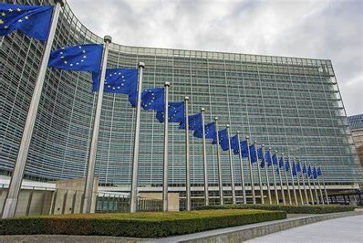
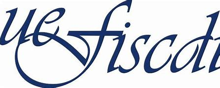

Horizon Europe
Funding and Tenders Portal
HORIZON upcoming and open calls checker
Pillar 1: Excellent science (ERC & MSCA) Pillar 2: Global Challenges (Clusters 1 - 8) Widening programmeUEFISCDI NCP page, general European projects news
List of persons at UEFISCDI responsible for relationships with Horizon subprogrammes, and general news regarding European projects.
Horizon Europe: NCP portal
A portal initially intended for NCPs, but with a lot of useful information and news for project managers. Launched recently.
UEFISCTI NCP: WIDERA.NET
A project, a network of NCPs aiming to consolidate and increase
participation in Horizon project among the widening countries.
Implementation period 1.4.2022 - 31.3.2025
Current events
| Open call |
|---|
|
Pre-proposal deadline 18. Jan 2025 Future Food Systems, Horizon Europe call. Call website Call info webinar 21. Nov |
| Training |
|---|
|
9.-12. Dec 2024 Series of free training webinars on Horizon Europe. Reg. links in euprojects webmail in mail by Sorina of 7. Nov 2024. |
| Workshop |
|---|
|
27. Nov 2024 Workshop on writing implementation strategy in Horizon. Organized by UEFISCDI and Brasov University Website UEFISCDI |
| Co-creation |
|---|
|
14. Nov - 18. Dec 2024 RM Roadmap 3rd co-creation session to commence. Newsletter article + registration link |
| CARDEA academy |
|---|
|
Opens on 25. Nov 2024 A series of free webinars on basic competencies of RM personnel. Academy site |
| Call webinar |
|---|
| 21. Nov 2024
Future of Food Systems current open call informative webinar Webinar. Joining details website |
Other programmes
UEFISCDI - Rewarding participation in Horizon
UEFISCDI is running a continuous submission call where members of research team that participates in a Horizon Europe project can get financial awards.
Awards for researchers (UEFISCDI website) Awards for institutions (UEFISCDI website)Driving Urban Transition partnership (DUT)
The DUT Partnership addresses the challenges which European cities face in their endeavour to become sustainable and enhance the quality of life for their citizens.
See the DUT 2024 call (expired)USA: FulBright programme
A series of 1-year scholarships for study and research visits to institutions in the USA. Grants target groups range from Master students to mid-career researchers. Topics mostly regard civil society.
DIGITAL EUROPE programme 2021-2027
This programme supports actions in the areas of supercomputing, AI, cybersecurity, advanced digital skills, and uptake of digital technologies across the economy and society. Continuous submission at uefiscdi-direct platform.
Programme page at Funding & Tenders portal Upcoming and Open calls Romanian info Day on Digital Europe Programme (2022) Action types and funding/cofunding rates{kind=link}